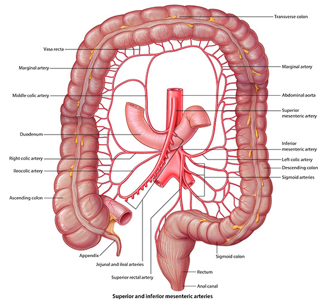

GAS1 Lab 7: Small and Large Intestine
OBJECTIVES:GAS1.7.1 Trace the flow of blood from the paired and unpaired arterial vessels to each of the abdominal organs supplied by the superior mesenteric artery and indicate possible collateral vascular pathways. GAS1.7.2 Trace the venous flow of blood from each of the abdominal organs drained by the superior mesenteric vein and indicate possible collateral vascular pathways. GAS1.7.3 Trace the flow of blood from the paired and unpaired arterial vessels to each of the abdominal organs supplied by the inferior mesenteric artery and indicate possible collateral vascular pathways. GAS1.7.4 Trace the venous flow of blood from each of the abdominal organs drained by the inferior mesenteric vein and indicate possible collateral vascular pathways. |
READINGS:Moore (Eighth Edition): Clinically Oriented Anatomy Pages: 465-476, 480-486. |
Small and Large Intestine - Page 1 of 7
We can now look at the superior mesenteric artery which feeds the midgut organs.
As you work through each step, please rotate, dissect and highlight this area to get the full effect of the aorta and arteries and their relationship to the superior mesenteric artery.
|  |
| Click on image to enlarge |
| Start with the superior mesenteric artery and iliac arteries. |
Notice that the superior mesenteric artery crosses over the duodenum. A fat pad between the duodenum and the superior mesenteric artery keeps the two of these structures from effecting one another.